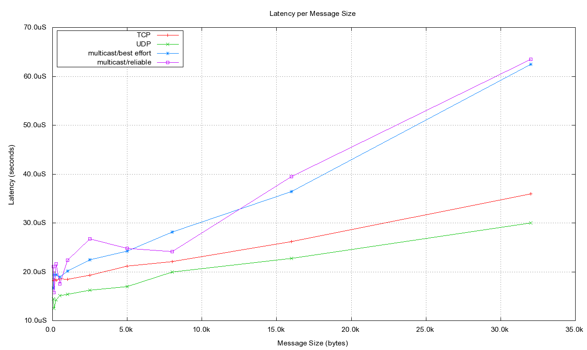
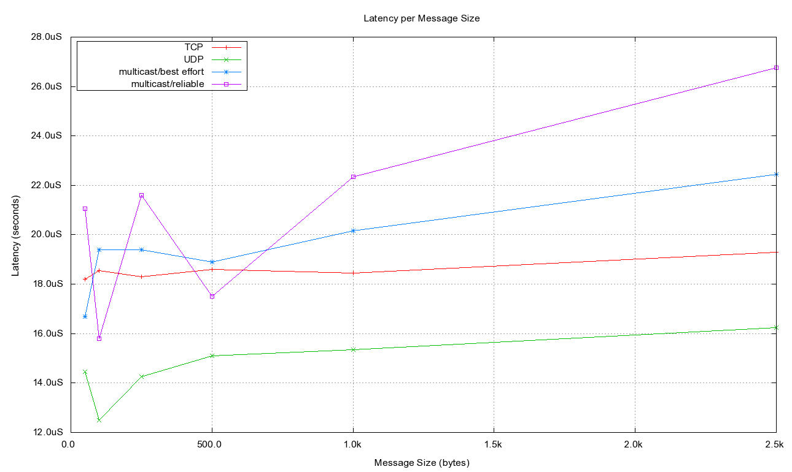
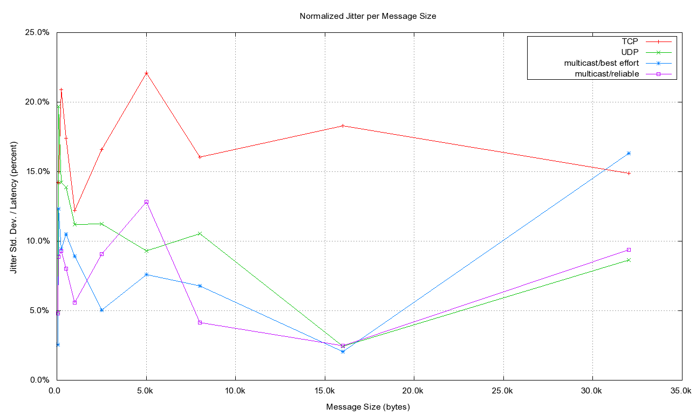
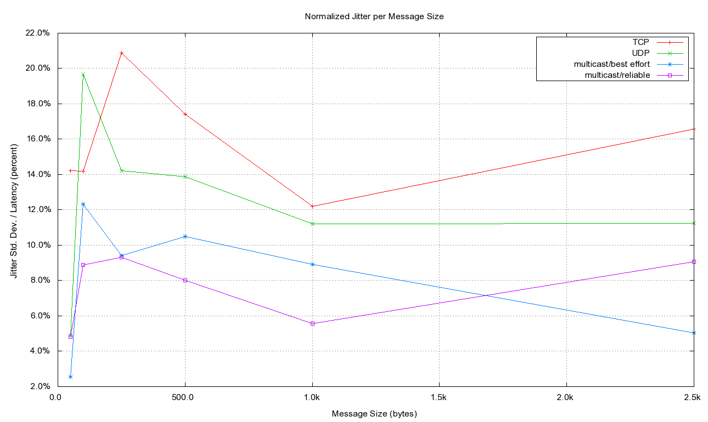

Latency Results
The results of executing the latency testing are included here. More
detailed information is included in the
Latency Details table. These results
include latency and jitter.
Latency for the TCP, UDP, best effort
Multicast, and reliable Multicast transports are shown in the diagram
below. Latency was measured by taking a timestamp in the originating
process, inserting that timestamp into the data sample and sending it.
When the data sample is received in the terminating process, another
timestamp is generated and the latency is defined as the different
between these two timestamps. This means that the latency numbers
include the OpenDDS transport latency
plus the system and
network transport latencies
plus the time to copy the entire
data sample since the timestamps are from the start of sending to the end
of receiving. The time to copy the message bytes is what causes the
latency charts below to have a linear aspect over the message sizes,
since as the message size increases, there are more bytes to
transport.
The latencies below are in microseconds and are
plotted against the size of the message being sent.

The
following diagram is a more detailed look at the
smaller message sizes of the previous chart.

Jitter
is defined as the time variation of latency on
successive samples. Jitter is plotted below as a
percent of the latency for each message size.

The
following diagram is a more detailed look at the
smaller message sizes of the previous chart.

$Id: latency_results.html 53 2010-01-30 23:51:02Z martinezm $